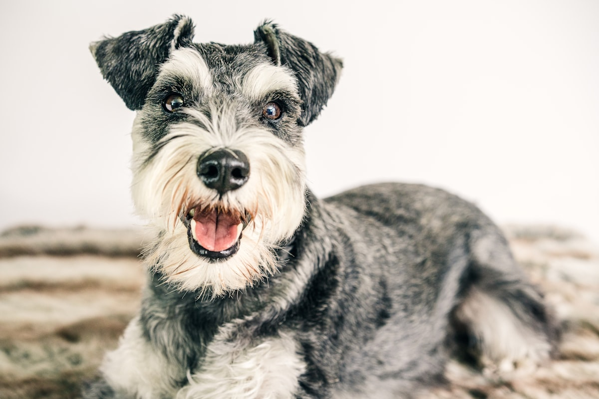

미니어처 슈나우저 키우기 완벽 가이드 — 성격·수명·췌장염 주의

수염과 눈썹이 매력인 "작은 신사" 미니어처 슈나우저. 충성심 강하고 씩씩한 성격에 털빠짐까지 적어 인기가 높지만, 이 품종에는 꼭 알아야 할 특징이 있습니다 — 기름진 음식에 유독 약하다는 것.
한눈에 보는 슈나우저
| 크기 | 소형견 (체중 약 5~9kg) |
|---|---|
| 수명 | 약 12~15년 |
| 털빠짐 | 매우 적음 (정기 미용 필수) |
| 활동량 | 중상 (씩씩하고 에너지 많음) |
| 성격 | 충성심 강함, 경계심 있음, 명랑 |
| 초보자 적합도 | 중상 (식이 관리 원칙만 지키면 무난) |
성격과 기질
슈나우저는 가족에게 깊이 붙는 충성형입니다. 보호자를 잘 따르고 놀이를 좋아하며, 소형견치고 겁이 없고 씩씩합니다. 본래 농장에서 쥐를 잡고 집을 지키던 품종이라 경계심과 영역 의식이 있어 낯선 소리에 짖을 수 있어요 — 어릴 때 사회화가 중요합니다.
고집이 살짝 있는 편이지만 머리가 좋아서, 일관된 규칙과 칭찬 기반 훈련이면 잘 따라옵니다.
주의해야 할 질병 — 식이가 절반입니다
- 고지혈증·췌장염 — 이 품종의 대표 주의점입니다. 미니어처 슈나우저는 혈중 지방이 높아지기 쉬운 소인이 알려져 있고, 기름진 음식이 췌장염으로 이어질 위험이 큽니다. 구토·복통·식욕부진이 함께 오면 바로 병원에 가세요.
- 요로결석 — 결석이 잘 생기는 품종으로 꼽힙니다. 물을 충분히 마시게 하고, 소변 상태(혈뇨·배뇨 곤란)를 눈여겨보세요.
- 피부 질환 — 면포(블랙헤드)성 피부 트러블이 있는 편입니다. 정기 미용 때 피부 상태를 확인하세요.
- 눈 질환 — 백내장 등 유전성 안과 질환 소인이 있어 정기 검진이 좋습니다.
관리 포인트
저지방 식이
이 품종 관리의 절반은 식이입니다. 지방 함량이 낮은 사료를 기본으로, 급여량 계산기로 적정량을 지키세요. 사람 음식은 원칙적으로 금지, 특히 금지 음식 목록은 꼭 숙지해 두세요.
미용
털이 잘 안 빠지는 대신 계속 자랍니다. 한 달~한 달 반 간격의 미용으로 수염·눈썹 컷을 유지하고, 수염은 식사 후 젖은 채 방치되지 않게 닦아주면 착색·냄새를 막을 수 있어요.
운동
에너지가 많은 편이라 하루 30분~1시간 산책 + 놀이로 풀어주세요. 운동 부족은 짖음 증가로 이어지기 쉽습니다.
이런 분께 잘 맞아요
- 털빠짐 적은 활발한 소형견을 원하는 분 (미용 비용 감당 전제)
- "사람 음식 안 주기" 원칙을 지킬 수 있는 가정
- 씩씩하고 존재감 있는 반려견을 원하는 분
자주 묻는 질문 (FAQ)
Q. 췌장염은 얼마나 위험한가요?
급성 췌장염은 입원 치료가 필요할 수 있는 응급 질환입니다. 슈나우저가 기름진 음식을 먹은 뒤 구토·축 처짐을 보이면 지체 없이 병원에 가세요.
Q. 미용을 안 하면 어떻게 되나요?
털이 계속 자라 엉키고 피부 트러블로 이어질 수 있습니다. 전체 미용은 주기적으로, 빗질은 주 2~3회 해주는 것이 좋습니다.
Q. 아이들과 잘 지내나요?
가족에게는 다정하지만 장난이 거칠면 예민해질 수 있습니다. 아이에게 강아지 대하는 법을 함께 가르치면 좋은 친구가 됩니다.